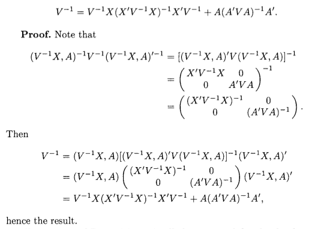

When I was a master student in Temple University, I spent a lot of time struggling with linear mixed model. Particularly, ML and REML estimation for linear mixed model has confused me for long time. So I decided to write this webpage as a time saver for students who are not familiar with this topic.
\[\begin{equation} \boldsymbol{Y} = \boldsymbol{X\beta} + \boldsymbol{Zu} + \boldsymbol{e} \tag{2.1} \end{equation}\]
\[\begin{equation} \begin{pmatrix} \boldsymbol{u}\\ \boldsymbol{e} \end{pmatrix} \sim \mathcal{N} \begin{pmatrix} \begin{pmatrix} \boldsymbol{0}\\ \boldsymbol{0} \end{pmatrix}, \begin{pmatrix} \boldsymbol{G} & \boldsymbol{0}\\ \boldsymbol{0} & \boldsymbol{R} \end{pmatrix} \end{pmatrix} \tag{2.2} \end{equation}\]
\(\boldsymbol{X}\) and \(\boldsymbol{Z}\) are design matrix.
\(\boldsymbol{\beta}\) is fix effect vector.
\(\boldsymbol{u}\) is random effect vector.
For given \(\boldsymbol{u}\) (consider \(\boldsymbol{u}\) as constant vector),
\[\begin{equation} \boldsymbol{Y} | \boldsymbol{u} \sim \mathcal{N} (\boldsymbol{X\beta} + \boldsymbol{Zu}, \boldsymbol{R}) \tag{2.3} \end{equation}\]
The distribution of \(\boldsymbol{y}\) is (recall: Var\((\boldsymbol{AX}+\boldsymbol{a}) = \boldsymbol{A}\text{var}(\boldsymbol{X})\boldsymbol{A}^{T}\) )
\[\begin{equation} \boldsymbol{Y} \sim \mathcal{N} (\boldsymbol{X\beta}, \boldsymbol{ZG}\boldsymbol{Z}^{T} + \boldsymbol{R}) \tag{2.4} \end{equation}\]
For convenience, we define
\[\begin{equation} \boldsymbol{V} = \boldsymbol{ZGZ}^T + \boldsymbol{R} \tag{2.5} \end{equation}\]
Recall that for \(\boldsymbol{y} = (y_1,y_2,\dots,y_n)^T \sim \mathcal{N}(\boldsymbol{\mu},\boldsymbol{\Sigma}_y)\), the probability density function(PDF) is
\[\begin{equation} P(\boldsymbol{y}) = (2\pi)^{-\frac{n}{2}} |\boldsymbol{\Sigma}_y|^{-\frac{1}{2}} \text{exp}[-\frac{1}{2}(\boldsymbol{y} - \boldsymbol{\mu})^{T}\boldsymbol{\Sigma}_y^{-1}(\boldsymbol{y} - \boldsymbol{\mu})] \tag{3.1} \end{equation}\]
Combine equation (2.2) and equation (3.1), we have
\[\begin{equation} \begin{split} P\boldsymbol{\begin{pmatrix} u\\ \boldsymbol{e} \end{pmatrix}} &= (2\pi)^{-\frac{n+g}{2}} \boldsymbol{\begin{vmatrix} \boldsymbol{G} & \boldsymbol{0}\\ \boldsymbol{0} & \boldsymbol{R} \end{vmatrix}}^{-1} \text{exp}[-\frac{1}{2}\boldsymbol{\begin{pmatrix} u\\ \boldsymbol{e} \end{pmatrix}}^{T}\boldsymbol{\begin{pmatrix} \boldsymbol{G} & \boldsymbol{0}\\ \boldsymbol{0} & \boldsymbol{R} \end{pmatrix}}^{-1}\boldsymbol{\begin{pmatrix} u\\ \boldsymbol{e} \end{pmatrix}}] \\ &= (2\pi)^{-\frac{n+g}{2}} \boldsymbol{\begin{vmatrix} \boldsymbol{G} & \boldsymbol{0}\\ \boldsymbol{0} & \boldsymbol{R} \end{vmatrix}}^{-1} \text{exp}[-\frac{1}{2}\boldsymbol{\begin{pmatrix} u\\ \boldsymbol{e} \end{pmatrix}}^{T}\boldsymbol{\begin{pmatrix} \boldsymbol{G}^{-1} & \boldsymbol{0}\\ \boldsymbol{0} & \boldsymbol{R}^{-1} \end{pmatrix}}\boldsymbol{\begin{pmatrix} u\\ \boldsymbol{e} \end{pmatrix}}] \end{split} \tag{3.2} \end{equation}\]
where \(g\) is the number of element of random vector \(\boldsymbol{u}\)
Since \(\boldsymbol{V}\) is known(implies that \(\boldsymbol{G} \text{ and } \boldsymbol{Q}\) is known), equation (3.2) depends on \(\boldsymbol{e}\) and \(\boldsymbol{u}\).
Maximise \(P\boldsymbol{\begin{pmatrix} u\\ \boldsymbol{e} \end{pmatrix}}\) is equivalent to minimize
\[\begin{equation} Q(\boldsymbol{u}, \boldsymbol{e}) = \boldsymbol{\begin{pmatrix} u\\ \boldsymbol{e} \end{pmatrix}}^{T}\boldsymbol{\begin{pmatrix} \boldsymbol{G}^{-1} & \boldsymbol{0}\\ \boldsymbol{0} & \boldsymbol{R}^{-1} \end{pmatrix}}\boldsymbol{\begin{pmatrix} u\\ \boldsymbol{e} \end{pmatrix}} = \boldsymbol{u}^T\boldsymbol{G}^{-1}\boldsymbol{u} + \boldsymbol{e}^T\boldsymbol{R}^{-1}\boldsymbol{e} \tag{3.3} \end{equation}\]
Note that \(\boldsymbol{e} = \boldsymbol{e}(\boldsymbol{\beta},\boldsymbol{u}) = \boldsymbol{Y} - \boldsymbol{X\beta} - \boldsymbol{Zu}\)
Using results from Matrix Caculus, we have
\[\begin{equation} \frac{\partial \boldsymbol{e} }{\partial \boldsymbol{\beta}} = - \boldsymbol{X}^T \tag{3.4} \end{equation}\]
\[\begin{equation} \frac{\partial \boldsymbol{e} }{\partial \boldsymbol{u}} = - \boldsymbol{Z}^T \tag{3.5} \end{equation}\]
Based on equations (3.3), (3.4) and (3.5), we have (don’t forget chain rule from matrix caculus)
\[\begin{equation} \begin{split} \frac{\partial Q}{\partial \boldsymbol{\beta}} &= \frac{\partial (\boldsymbol{u}^T\boldsymbol{G}^{-1}\boldsymbol{u})}{\partial \boldsymbol{\beta}} + \frac{\partial \boldsymbol{e}}{\partial \boldsymbol{\beta}} \frac{\partial (\boldsymbol{e}^T\boldsymbol{R}^{-1}\boldsymbol{e})}{\partial \boldsymbol{e}} \\ & = - 2\boldsymbol{X}^T \boldsymbol{R}^{-1}\boldsymbol{e} \end{split} \tag{3.6} \end{equation}\]
Similarly, we have
\[\begin{equation} \begin{split} \frac{\partial Q}{\partial \boldsymbol{u}} &= \frac{\partial (\boldsymbol{u}^T\boldsymbol{G}^{-1}\boldsymbol{u})}{\partial \boldsymbol{u}} + \frac{\partial \boldsymbol{e}}{\partial \boldsymbol{u}} \frac{\partial (\boldsymbol{e}^T\boldsymbol{R}^{-1}\boldsymbol{e})}{\partial \boldsymbol{e}} \\ & = 2\boldsymbol{G}^{-1}\boldsymbol{u} - 2\boldsymbol{Z}^T \boldsymbol{R}^{-1}\boldsymbol{e} \end{split} \tag{3.6} \end{equation}\]
Setting \(\frac{\partial Q}{\partial \boldsymbol{\beta}}\) and \(\frac{\partial Q}{\partial \boldsymbol{u}}\) to be \(\boldsymbol{0}\) and replacing \(\boldsymbol{e}\) with \(\boldsymbol{e} = \boldsymbol{Y} - \boldsymbol{X\beta} - \boldsymbol{Zu}\), we have
\[\begin{equation} \begin{split} \frac{\partial Q}{\partial \boldsymbol{\beta}} = \boldsymbol{0} \Leftrightarrow \boldsymbol{X}^T \boldsymbol{R}^{-1} \boldsymbol{X}\tilde{\boldsymbol{\beta}} + \boldsymbol{X}^T \boldsymbol{R}^{-1} \boldsymbol{Z}\tilde{\boldsymbol{u}} = \boldsymbol{X}^T \boldsymbol{R}^{-1} \boldsymbol{Y} \end{split} \tag{3.7} \end{equation}\]
\[\begin{equation} \begin{split} \frac{\partial Q}{\partial \boldsymbol{u}} = \boldsymbol{0} \Leftrightarrow \boldsymbol{Z}^T \boldsymbol{R}^{-1} \boldsymbol{X}\tilde{\boldsymbol{\beta}} + (\boldsymbol{Z}^T \boldsymbol{R}^{-1} \boldsymbol{Z} + \boldsymbol{G}^{-1}) \tilde{\boldsymbol{u}} = \boldsymbol{Z}^T \boldsymbol{R}^{-1} \boldsymbol{Y} \end{split} \tag{3.8} \end{equation}\]
Organizing equations (3.7) and (3.8), we have famous Henderson’s mixed-model equations in matrix form.
\[\begin{equation} \begin{bmatrix} \boldsymbol{X}^T \boldsymbol{R}^{-1} \boldsymbol{X} & \boldsymbol{X}^T \boldsymbol{R}^{-1} \boldsymbol{Z}\\ \boldsymbol{Z}^T \boldsymbol{R}^{-1} \boldsymbol{X} & \boldsymbol{Z}^T \boldsymbol{R}^{-1} \boldsymbol{Z} + \boldsymbol{G}^{-1} \end{bmatrix} \begin{bmatrix} \tilde{\boldsymbol{\beta}}\\ \tilde{\boldsymbol{u}} \end{bmatrix} = \begin{bmatrix} \boldsymbol{X}^T \boldsymbol{R}^{-1} \boldsymbol{Y}\\ \boldsymbol{Z}^T \boldsymbol{R}^{-1} \boldsymbol{Y} \end{bmatrix} \tag{3.8} \end{equation}\]
Solution of (3.8) is
\[\begin{equation} \begin{split} \begin{bmatrix} \tilde{\boldsymbol{\beta}}\\ \tilde{\boldsymbol{u}} \end{bmatrix} &= \begin{bmatrix} (\boldsymbol{X}^T\boldsymbol{V}^{-1}\boldsymbol{X})^{-1}\boldsymbol{X}^{T}\boldsymbol{V}^{-1}\boldsymbol{Y} \\ \boldsymbol{GZ}^T\boldsymbol{V}^{-1}(\boldsymbol{Y} - \boldsymbol{X}(\boldsymbol{X}^T\boldsymbol{V}^{-1}\boldsymbol{X})^{-1}\boldsymbol{X}^T\boldsymbol{V}^{-1}\boldsymbol{Y}) \end{bmatrix} \end{split} \tag{3.9} \end{equation}\]
Henderson and his PHD student, S.R. Sealer has proved why (3.9) is true in Henderson et al. (1959) and Henderson (1963). In next section, I show this important proof step by step.
Equation (3.8) is equivalent to (4.1) and (4.2)
\[\begin{equation} \boldsymbol{X}^T \boldsymbol{R}^{-1} \boldsymbol{X} \tilde{\boldsymbol{\beta}} + \boldsymbol{X}^T \boldsymbol{R}^{-1} \boldsymbol{Z} \tilde{\boldsymbol{u}} = \boldsymbol{X}^T \boldsymbol{R}^{-1} \boldsymbol{Y} \tag{4.1} \end{equation}\]
\[\begin{equation} \boldsymbol{Z}^T \boldsymbol{R}^{-1} \boldsymbol{X} \tilde{\boldsymbol{\beta}} + (\boldsymbol{Z}^T \boldsymbol{R}^{-1} \boldsymbol{Z} + \boldsymbol{G}^{-1}) \tilde{\boldsymbol{u}} = \boldsymbol{Z}^T \boldsymbol{R}^{-1} \boldsymbol{Y} \tag{4.2} \end{equation}\]
Because \(\boldsymbol{R}\) is positive definite and \(\boldsymbol{Z}\) has independent columns, \(\boldsymbol{Z}^{T}\boldsymbol{R}^{-1}\boldsymbol{Z}\) is also positive definite. All positive definite matrices are invertible.
Then, equation (4.2) can be transformed into (4.3)
\[\begin{equation} (\boldsymbol{Z}^T \boldsymbol{R}^{-1} \boldsymbol{Z} + \boldsymbol{G}^{-1})^{-1}\boldsymbol{Z}^T \boldsymbol{R}^{-1} \boldsymbol{X} \tilde{\boldsymbol{\beta}} + \tilde{\boldsymbol{u}} = (\boldsymbol{Z}^T \boldsymbol{R}^{-1} \boldsymbol{Z} + \boldsymbol{G}^{-1})^{-1}\boldsymbol{Z}^T \boldsymbol{R}^{-1} \boldsymbol{Y} \tag{4.3} \end{equation}\]
The next step is
\[\begin{equation} \boldsymbol{X}^T \boldsymbol{R}^{-1} \boldsymbol{Z} (\boldsymbol{Z}^T \boldsymbol{R}^{-1} \boldsymbol{Z} + \boldsymbol{G}^{-1})^{-1} \boldsymbol{Z}^T \boldsymbol{R}^{-1} \boldsymbol{X} \tilde{\boldsymbol{\beta}} + \boldsymbol{X}^T \boldsymbol{R}^{-1} \boldsymbol{Z} \tilde{\boldsymbol{u}} = \boldsymbol{X}^T \boldsymbol{R}^{-1} \boldsymbol{Z} (\boldsymbol{Z}^T \boldsymbol{R}^{-1} \boldsymbol{Z} + \boldsymbol{G}^{-1})^{-1}\boldsymbol{Z}^T \boldsymbol{R}^{-1} \boldsymbol{Y} \tag{4.4} \end{equation}\]
Combining (4.1) (4.4), we can eliminate \(\tilde{\boldsymbol{u}}\)
\[\begin{equation} \boldsymbol{X}^T (\boldsymbol{R}^{-1} - \boldsymbol{R}^{-1} \boldsymbol{Z} (\boldsymbol{Z}^T \boldsymbol{R}^{-1} \boldsymbol{Z} + \boldsymbol{G}^{-1})^{-1} \boldsymbol{Z}^T \boldsymbol{R}^{-1}) \boldsymbol{X} \tilde{\boldsymbol{\beta}} = \boldsymbol{X}^T (\boldsymbol{R}^{-1} - \boldsymbol{R}^{-1} \boldsymbol{Z} (\boldsymbol{Z}^T \boldsymbol{R}^{-1} \boldsymbol{Z} + \boldsymbol{G}^{-1})^{-1} \boldsymbol{Z}^T \boldsymbol{R}^{-1}) \boldsymbol{Y} \tag{4.5} \end{equation}\]
For convenience, we define \(\boldsymbol{W} = \boldsymbol{R}^{-1} - \boldsymbol{R}^{-1} \boldsymbol{Z} (\boldsymbol{Z}^T \boldsymbol{R}^{-1} \boldsymbol{Z} + \boldsymbol{G}^{-1})^{-1} \boldsymbol{Z}^T \boldsymbol{R}^{-1}\), then (4.5) becomes
\[\begin{equation} \boldsymbol{X}^T \boldsymbol{W} \boldsymbol{X}\tilde{\boldsymbol{\beta}} = \boldsymbol{X}^T \boldsymbol{W} \boldsymbol{Y} \tag{4.6} \end{equation}\]
Then \[\begin{equation} \tilde{\boldsymbol{\beta}} = (\boldsymbol{X}^T \boldsymbol{W} \boldsymbol{X})^{-1} \boldsymbol{X}^T \boldsymbol{W} \boldsymbol{Y} \tag{4.7} \end{equation}\]
If we can prove that \(\boldsymbol{W} = \boldsymbol{V}^{-1}\), then we have completed the proof for \(\tilde{\boldsymbol{\beta}}\) in (3.9).
\[\begin{equation} \begin{split} \boldsymbol{VW} &= (\boldsymbol{R} + \boldsymbol{ZGZ}^T)(\boldsymbol{R}^{-1} - \boldsymbol{R}^{-1} \boldsymbol{Z} (\boldsymbol{Z}^T \boldsymbol{R}^{-1} \boldsymbol{Z} + \boldsymbol{G}^{-1})^{-1} \boldsymbol{Z}^T \boldsymbol{R}^{-1})\\ &= \boldsymbol{I} + \boldsymbol{ZGZ}^T\boldsymbol{R}^{-1} - \boldsymbol{Z} (\boldsymbol{Z}^T \boldsymbol{R}^{-1} \boldsymbol{Z} + \boldsymbol{G}^{-1})^{-1} \boldsymbol{Z}^T \boldsymbol{R}^{-1} - \boldsymbol{ZGZ}^T \boldsymbol{R}^{-1} \boldsymbol{Z} (\boldsymbol{Z}^T \boldsymbol{R}^{-1} \boldsymbol{Z} + \boldsymbol{G}^{-1})^{-1} \boldsymbol{Z}^T \boldsymbol{R}^{-1}\\ &= \boldsymbol{I} + \boldsymbol{ZGZ}^T\boldsymbol{R}^{-1} - \boldsymbol{Z} ((\boldsymbol{Z}^T \boldsymbol{R}^{-1} \boldsymbol{Z} + \boldsymbol{G}^{-1})^{-1} + \boldsymbol{GZ}^{T} \boldsymbol{R}^{-1} \boldsymbol{Z} (\boldsymbol{Z}^T \boldsymbol{R}^{-1} \boldsymbol{Z} + \boldsymbol{G}^{-1})^{-1}) \boldsymbol{Z}^T \boldsymbol{R}^{-1}\\ &= \boldsymbol{I} + \boldsymbol{ZGZ}^T\boldsymbol{R}^{-1} - \boldsymbol{Z}(\boldsymbol{I} + \boldsymbol{GZ}^{T} \boldsymbol{R}^{-1}\boldsymbol{Z})(\boldsymbol{Z}^T \boldsymbol{R}^{-1} \boldsymbol{Z} + \boldsymbol{G}^{-1})^{-1} \boldsymbol{Z}^T \boldsymbol{R}^{-1} \\ &= \boldsymbol{I} + \boldsymbol{ZGZ}^T\boldsymbol{R}^{-1} - \boldsymbol{Z}\boldsymbol{G}(\boldsymbol{G}^{-1} + \boldsymbol{Z}^{T} \boldsymbol{R}^{-1}\boldsymbol{Z})(\boldsymbol{Z}^T \boldsymbol{R}^{-1} \boldsymbol{Z} + \boldsymbol{G}^{-1})^{-1} \boldsymbol{Z}^T \boldsymbol{R}^{-1}\\ &= \boldsymbol{I} + \boldsymbol{ZGZ}^T\boldsymbol{R}^{-1} - \boldsymbol{Z}\boldsymbol{G}\boldsymbol{Z}^T \boldsymbol{R}^{-1}\\ &= \boldsymbol{I} \end{split} \tag{4.8} \end{equation}\]
Now replace \(\boldsymbol{W}\) with \(\boldsymbol{V}^{-1}\), (4.7) becomes
\[\begin{equation} \tilde{\boldsymbol{\beta}} = (\boldsymbol{X}^T \boldsymbol{V}^{-1} \boldsymbol{X})^{-1} \boldsymbol{X}^T \boldsymbol{V}^{-1} \boldsymbol{Y} \tag{4.9} \end{equation}\]
Here we complete the proof for \(\tilde{\boldsymbol{\beta}}\) in (3.9).
The proof for \(\tilde{\boldsymbol{u}}\) is much easier. Subtract \(\boldsymbol{Z}^T \boldsymbol{R}^{-1} \boldsymbol{X} \tilde{\boldsymbol{\beta}}\) in both side of (4.2). We have
\[\begin{equation} (\boldsymbol{Z}^T \boldsymbol{R}^{-1} \boldsymbol{Z} + \boldsymbol{G}^{-1}) \tilde{\boldsymbol{u}} = \boldsymbol{Z}^T \boldsymbol{R}^{-1} \boldsymbol{Y} - \boldsymbol{Z}^T \boldsymbol{R}^{-1} \boldsymbol{X} \tilde{\boldsymbol{\beta}} \tag{4.10} \end{equation}\]
Then
\[\begin{equation} \begin{split} \tilde{\boldsymbol{u}} &= (\boldsymbol{Z}^T \boldsymbol{R}^{-1} \boldsymbol{Z} + \boldsymbol{G}^{-1})^{-1} (\boldsymbol{Z}^T \boldsymbol{R}^{-1} \boldsymbol{Y} - \boldsymbol{Z}^T \boldsymbol{R}^{-1} \boldsymbol{X} \tilde{\boldsymbol{\beta}})\\ &= (\boldsymbol{Z}^T \boldsymbol{R}^{-1} \boldsymbol{Z} + \boldsymbol{G}^{-1})^{-1} \boldsymbol{Z}^T\boldsymbol{R}^{-1} (\boldsymbol{Y} - \boldsymbol{X} \tilde{\boldsymbol{\beta}})\\ &= (\boldsymbol{Z}^T \boldsymbol{R}^{-1} \boldsymbol{Z} + \boldsymbol{G}^{-1})^{-1} \boldsymbol{Z}^T\boldsymbol{R}^{-1} \boldsymbol{V}\boldsymbol{V}^{-1} (\boldsymbol{Y} - \boldsymbol{X} \tilde{\boldsymbol{\beta}})\\ &= (\boldsymbol{Z}^T \boldsymbol{R}^{-1} \boldsymbol{Z} + \boldsymbol{G}^{-1})^{-1} \boldsymbol{Z}^T\boldsymbol{R}^{-1} (\boldsymbol{ZGZ}^T + \boldsymbol{R}) \boldsymbol{V}^{-1} (\boldsymbol{Y} - \boldsymbol{X} \tilde{\boldsymbol{\beta}})\\ &= (\boldsymbol{Z}^T \boldsymbol{R}^{-1} \boldsymbol{Z} + \boldsymbol{G}^{-1})^{-1} (\boldsymbol{Z}^T\boldsymbol{R}^{-1}\boldsymbol{ZGZ}^T + \boldsymbol{Z}^T) \boldsymbol{V}^{-1} (\boldsymbol{Y} - \boldsymbol{X} \tilde{\boldsymbol{\beta}})\\ &= (\boldsymbol{Z}^T \boldsymbol{R}^{-1} \boldsymbol{Z} + \boldsymbol{G}^{-1})^{-1} (\boldsymbol{Z}^T\boldsymbol{R}^{-1}\boldsymbol{Z} + \boldsymbol{G}^{-1}) \boldsymbol{G}\boldsymbol{Z}^T \boldsymbol{V}^{-1} (\boldsymbol{Y} - \boldsymbol{X} \tilde{\boldsymbol{\beta}})\\ &= \boldsymbol{G}\boldsymbol{Z}^T \boldsymbol{V}^{-1} (\boldsymbol{Y} - \boldsymbol{X} \tilde{\boldsymbol{\beta}}) \end{split} \tag{4.11} \end{equation}\]
Replace \(\tilde{\boldsymbol{\beta}}\) of (4.11) with \((\boldsymbol{X}^T \boldsymbol{V}^{-1} \boldsymbol{X})^{-1} \boldsymbol{X}^T \boldsymbol{V}^{-1} \boldsymbol{Y}\), we have
\[\begin{equation} \tilde{\boldsymbol{u}} = \boldsymbol{G}\boldsymbol{Z}^T \boldsymbol{V}^{-1} (\boldsymbol{Y} - \boldsymbol{X} (\boldsymbol{X}^T \boldsymbol{V}^{-1} \boldsymbol{X})^{-1} \boldsymbol{X}^T \boldsymbol{V}^{-1} \boldsymbol{Y} ) \tag{4.12} \end{equation}\]
Here we complete the proof for \(\tilde{\boldsymbol{u}}\) in (3.9).
From (2.4) ,(2.5) and (3.1) we have that
\[\begin{equation} f_{\boldsymbol{Y}}(y_1,\dots,y_n) = \frac{\text{exp}(-\frac{1}{2} (\boldsymbol{Y} - \boldsymbol{X\beta})^{T} \boldsymbol{V}^{-1}(\boldsymbol{Y} - \boldsymbol{X\beta}))}{\sqrt{(2\pi)^n |\boldsymbol{V}|}} \tag{5.1} \end{equation}\]
Then we have log-likelihood as
\[\begin{equation} \begin{split} -2\ell(\boldsymbol{\beta};\boldsymbol{Y}) &= -2\text{log}(f_{\boldsymbol{Y}}(y_1,\dots,y_n))\\ &= \text{log}|\boldsymbol{V}| + (\boldsymbol{Y} - \boldsymbol{X\beta})^{T} \boldsymbol{V}^{-1}(\boldsymbol{Y} - \boldsymbol{X\beta}) + c \end{split} \tag{5.2} \end{equation}\] where \(c\) is \(n\text{log}(2\pi)\)
Practically, \(\boldsymbol{V}\) is unknown for most cases.
Since \(\boldsymbol{V}\) is determined by \(\boldsymbol{G}\) and \(\boldsymbol{R}\), \(\tilde{\boldsymbol{V}} = \tilde{\boldsymbol{V}}(\tilde{\boldsymbol{G}},\tilde{\boldsymbol{R}})\). Similarly we have that \(\tilde{\boldsymbol{\beta}}\), shown in (3.9), is also determined by \(\tilde{\boldsymbol{G}}\) and \(\tilde{\boldsymbol{R}}\), \(\tilde{\boldsymbol{\beta}} = \tilde{\boldsymbol{\beta}}(\tilde{\boldsymbol{G}},\tilde{\boldsymbol{R}})\).
For convenience, we define covariance parameter as \(\boldsymbol{\theta}\), for matrix \(\boldsymbol{G}\) and \(\boldsymbol{R}\).
Changing \(\boldsymbol{V}\) with \(\tilde{\boldsymbol{V}}(\boldsymbol{\theta})\) and \(\boldsymbol{\beta}\) with \(\tilde{\boldsymbol{\beta}}(\boldsymbol{\theta})\), we have log-likelihood function from (5.2) becomes a function of \(\boldsymbol{\theta}\).
\[\begin{equation} -2\ell(\boldsymbol{\theta};\boldsymbol{Y}) = \text{log}|\tilde{\boldsymbol{V}}(\boldsymbol{\theta})| + (\boldsymbol{Y}-\boldsymbol{X}\tilde{\boldsymbol{\beta}}(\boldsymbol{\theta}))^T \tilde{\boldsymbol{V}}(\boldsymbol{\theta})^{-1} (\boldsymbol{Y}-\boldsymbol{X}\tilde{\boldsymbol{\beta}}(\boldsymbol{\theta})) \tag{6.1} \end{equation}\]
From (6.1), we can see that the key of MLE of linear mixed model is to estimate covariance matrix \(\tilde{\boldsymbol{V}}(\boldsymbol{\theta})\), equivalently \(\boldsymbol{\theta}\).
It is widely known that ML estimation has trend to under-estimate covariance parameters and hence is biased. The detailed proof can be found in page 749 of Littell et al. (2006). Following is the equation, from SAS for Mixed Model (Second Edition), that shows MLE of covariance is biased.
\[E(\hat{\sigma}_{MLE} - \sigma^2) = \frac{-1}{n}\sigma^2\] Here I will focus on how to derive commonly used REML log-likelihood.
The first step of REML is about removing parameter \(\boldsymbol{\beta}\) from log-likelihood by creating a matrix \(\boldsymbol{A}^T\) such as
\[\begin{equation} \boldsymbol{A}^T \boldsymbol{Y} \sim \mathcal{N}(\boldsymbol{0}, \boldsymbol{A}^T\tilde{\boldsymbol{V}}(\boldsymbol{\theta})\boldsymbol{A}) \tag{7.1} \end{equation}\]
The direct log-likelihood of REML:
\[\begin{equation} -2\ell_{REML}(\boldsymbol{\theta};\boldsymbol{A}^T\boldsymbol{Y}) = \text{log}|\boldsymbol{A}^T \tilde{\boldsymbol{V}}(\boldsymbol{\theta}) \boldsymbol{A}| + \boldsymbol{Y}^T\boldsymbol{A} (\boldsymbol{A}^T \tilde{\boldsymbol{V}}(\boldsymbol{\theta}) \boldsymbol{A})^{-1} \boldsymbol{A}^T\boldsymbol{Y} \tag{7.2} \end{equation}\]
However, this is only a theoretical likelihood. It is very common that \(\boldsymbol{A}^T \tilde{\boldsymbol{V}}(\boldsymbol{\theta}) \boldsymbol{A}\) is singular matrix hence \(\text{log}|\boldsymbol{A}^T \tilde{\boldsymbol{V}}(\boldsymbol{\theta}) \boldsymbol{A}| \rightarrow - \infty\).
A better method/log-likelihood is needed for practical calculation.
\[\begin{equation} -2\ell_{REML}(\boldsymbol{\theta};\boldsymbol{Y}) = \text{log} |\tilde{\boldsymbol{V}}(\boldsymbol{\theta})| + \text{log} |\boldsymbol{X}^T \tilde{\boldsymbol{V}}^{-1} \boldsymbol{X}| + (\boldsymbol{Y} - \boldsymbol{X}\tilde{\boldsymbol{\beta}}(\boldsymbol{\theta}))^T \tilde{\boldsymbol{V}}^{-1} (\boldsymbol{Y} - \boldsymbol{X}\tilde{\boldsymbol{\beta}}(\boldsymbol{\theta})) \tag{7.3} \end{equation}\] The substitute REML log-likelihood, (7.3), was first derived by Patterson and Thompson (1971) then derived in a Bayesian way by Harville (1974). This equation shows that \(\boldsymbol{A}^T\) , from (7.1), has no influence on REML log-likelihood.
However, both papers, Patterson and Thompson (1971) and Harville (1974), are very difficult to understand. In Harville (1974), REML log-likelihood substitute was derived in a equation less than 4 lines! Reader must have substantial knowledge in linear algebra and probability theory to understand Harville’s equations. A detailed explanation of Harville’s method, A Tutorial on Restricted Maximum Likelihood Estimation in Linear Regression and Linear Mixed-Effects Model by Xiuming Zhang, could be found here.
The best derivation of the REML log-likelihood in (7.3) I can find is LaMotte (2007). Following are essential steps to derive REML log-likelihood in (7.3).
To prove that \(\begin{bmatrix} \boldsymbol{V}^{-1} \boldsymbol{X}, \boldsymbol{A} \end{bmatrix}_{n \times n}\) is nonsingular, we need to define matrix \(\boldsymbol{S}\) and know the relationship between \(\boldsymbol{A}\) and \(\boldsymbol{S}\).
Define \(\boldsymbol{S}\) as \[\begin{equation} \boldsymbol{S} = \boldsymbol{I} - \boldsymbol{X}(\boldsymbol{X}^T\boldsymbol{X})^{-1}\boldsymbol{X}^T \tag{7.4} \end{equation}\]
\(\boldsymbol{A}\) should not only match (7.1) and but also match
\[\begin{equation} \boldsymbol{S} = \boldsymbol{A} \boldsymbol{A}^T \tag{7.5} \end{equation}\]
More about \(\boldsymbol{A}_{n \times (n-p)}\)
\[\begin{equation} \boldsymbol{A}^T \boldsymbol{A} = \boldsymbol{I} \tag{7.6} \end{equation}\]
Block matrices’ determinant, for invertible \(\boldsymbol{A}_{22}\)
\[\begin{equation} \text{det} \begin{bmatrix} \boldsymbol{A}_{11} & \boldsymbol{A}_{12}\\ \boldsymbol{A}_{21} & \boldsymbol{A}_{22} \end{bmatrix} = \text{det} \begin{bmatrix} \boldsymbol{A}_{22} \end{bmatrix} \text{det} \begin{bmatrix} \boldsymbol{A}_{11} - \boldsymbol{A}_{12} \boldsymbol{A}^{-1}_{22}\boldsymbol{A}_{21} \end{bmatrix} \tag{7.7} \end{equation}\]
To prove that \(\begin{bmatrix} \boldsymbol{V}^{-1} \boldsymbol{X}, \boldsymbol{A} \end{bmatrix}\) is nonsingular is equivalent to prove that \(\text{det}\begin{bmatrix} \boldsymbol{V}^{-1} \boldsymbol{X}, \boldsymbol{A} \end{bmatrix} \ne 0\), which is also equivalent to \(\text{det}(\begin{bmatrix} \boldsymbol{V}^{-1} \boldsymbol{X}, \boldsymbol{A} \end{bmatrix}^T \begin{bmatrix} \boldsymbol{V}^{-1} \boldsymbol{X}, \boldsymbol{A} \end{bmatrix}) \ne 0\).
Now a long derivation begins,
\[\begin{equation} \begin{split} \begin{bmatrix} \boldsymbol{V}^{-1} \boldsymbol{X}, \boldsymbol{A} \end{bmatrix}^T \begin{bmatrix} \boldsymbol{V}^{-1} \boldsymbol{X}, \boldsymbol{A} \end{bmatrix} &= \begin{bmatrix} \boldsymbol{X}^T \boldsymbol{V}^{-1}\\ \boldsymbol{A}^T \end{bmatrix} \begin{bmatrix} \boldsymbol{V}^{-1} \boldsymbol{X}, \boldsymbol{A} \end{bmatrix}\\ &= \begin{bmatrix} \boldsymbol{X}^T \boldsymbol{V}^{-1} \boldsymbol{V}^{-1} \boldsymbol{X} & \boldsymbol{X}^T \boldsymbol{V}^{-1}\boldsymbol{A}\\ \boldsymbol{A}^T \boldsymbol{V}^{-1} \boldsymbol{X} & \boldsymbol{A}^T \boldsymbol{A} \end{bmatrix}\\ & \stackrel{(7.6)}{=} \begin{bmatrix} \boldsymbol{X}^T \boldsymbol{V}^{-1} \boldsymbol{V}^{-1} \boldsymbol{X} & \boldsymbol{X}^T \boldsymbol{V}^{-1}\boldsymbol{A}\\ \boldsymbol{A}^T \boldsymbol{V}^{-1} \boldsymbol{X} & \boldsymbol{I} \end{bmatrix} \end{split} \tag{7.8} \end{equation}\]
Then
\[\begin{equation} \begin{split} \text{det}(\begin{bmatrix} \boldsymbol{V}^{-1} \boldsymbol{X}, \boldsymbol{A} \end{bmatrix}^T \begin{bmatrix} \boldsymbol{V}^{-1} \boldsymbol{X}, \boldsymbol{A} \end{bmatrix}) & = \text{det}\begin{bmatrix} \boldsymbol{X}^T \boldsymbol{V}^{-1} \boldsymbol{V}^{-1} \boldsymbol{X} & \boldsymbol{X}^T \boldsymbol{V}^{-1}\boldsymbol{A}\\ \boldsymbol{A}^T \boldsymbol{V}^{-1} \boldsymbol{X} & \boldsymbol{I} \end{bmatrix}\\ & \stackrel{(7.7)}{=} \text{det} \begin{bmatrix} \boldsymbol{I} \end{bmatrix} \text{det} \begin{bmatrix} \boldsymbol{X}^T \boldsymbol{V}^{-1} \boldsymbol{V}^{-1} \boldsymbol{X} - \boldsymbol{X}^T \boldsymbol{V}^{-1}\boldsymbol{A} \boldsymbol{I}^{-1} \boldsymbol{A}^T \boldsymbol{V}^{-1} \boldsymbol{X} \end{bmatrix} \\ & = \text{det} \begin{bmatrix} \boldsymbol{X}^T \boldsymbol{V}^{-1} \boldsymbol{V}^{-1} \boldsymbol{X} - \boldsymbol{X}^T \boldsymbol{V}^{-1}\boldsymbol{A} \boldsymbol{A}^T \boldsymbol{V}^{-1} \boldsymbol{X} \end{bmatrix}\\ & \stackrel{(7.5)}{=} \text{det} \begin{bmatrix} \boldsymbol{X}^T \boldsymbol{V}^{-1} \boldsymbol{V}^{-1} \boldsymbol{X} - \boldsymbol{X}^T \boldsymbol{V}^{-1}\boldsymbol{S} \boldsymbol{V}^{-1} \boldsymbol{X} \end{bmatrix} \\ &= \text{det} \begin{bmatrix} \boldsymbol{X}^T \boldsymbol{V}^{-1} ( \boldsymbol{I} - \boldsymbol{S} ) \boldsymbol{V}^{-1} \boldsymbol{X} \end{bmatrix} \\ & \stackrel{(7.4)}{=} \text{det} \begin{bmatrix} \boldsymbol{X}^T \boldsymbol{V}^{-1} \boldsymbol{X}(\boldsymbol{X}^T\boldsymbol{X})^{-1}\boldsymbol{X}^T \boldsymbol{V}^{-1} \boldsymbol{X} \end{bmatrix} \\ & = \text{det} \begin{bmatrix} \boldsymbol{X}^T \boldsymbol{V}^{-1} \boldsymbol{X} \end{bmatrix} \text{det} \begin{bmatrix} (\boldsymbol{X}^T\boldsymbol{X})^{-1} \end{bmatrix} \text{det} \begin{bmatrix} \boldsymbol{X}^T \boldsymbol{V}^{-1} \boldsymbol{X} \end{bmatrix} \end{split} \tag{7.9} \end{equation}\]
Since \(\boldsymbol{X}\) has independent columns and \(\boldsymbol{V}\) is positive definite matrix, \(\boldsymbol{X}^T \boldsymbol{V}^{-1} \boldsymbol{X}\) is positive definite that can be proved by positive definite matrix’s definition (hint: \(\boldsymbol{y}^T \boldsymbol{X}^T \boldsymbol{V}^{-1} \boldsymbol{X} \boldsymbol{y} > 0\) for arbitrary non-zero vector \(\boldsymbol{y}\). \(\boldsymbol{Xy} = \boldsymbol{0}\) if and only \(\boldsymbol{y} = \boldsymbol{0}\)). Overall, \(\text{det} \begin{bmatrix}\boldsymbol{X}^T \boldsymbol{V}^{-1} \boldsymbol{X} \end{bmatrix} > 0\).
Since the inverse matrix of \(\boldsymbol{X}^T\boldsymbol{X}\) exists, \(\text{det}(\boldsymbol{X}^T\boldsymbol{X})^{-1} \ne 0\).
\(\text{det}(\begin{bmatrix} \boldsymbol{V}^{-1} \boldsymbol{X}, \boldsymbol{A} \end{bmatrix}^T \begin{bmatrix} \boldsymbol{V}^{-1} \boldsymbol{X}, \boldsymbol{A} \end{bmatrix}) \ne 0 \Leftrightarrow \begin{bmatrix} \boldsymbol{V}^{-1} \boldsymbol{X}, \boldsymbol{A} \end{bmatrix}\) is nonsingular
Screenshot from LaMotte (2007).

Equivalently,
\[\begin{equation} \boldsymbol{A}(\boldsymbol{A}^T \boldsymbol{V} \boldsymbol{A})^{-1} \boldsymbol{A}^T = \boldsymbol{V}^{-1} - \boldsymbol{V}^{-1} \boldsymbol{X} (\boldsymbol{X}^T \boldsymbol{V}^{-1} \boldsymbol{X})^{-1} \boldsymbol{X}^T \tag{7.10} \end{equation}\]
First, we need to prove that \(\boldsymbol{X}^T \boldsymbol{V}^{-1}(\boldsymbol{Y}-\boldsymbol{X}\tilde{\boldsymbol{\beta}})=0\)
\[\begin{equation} \begin{split} \boldsymbol{X}^T\boldsymbol{V}^{-1}(\boldsymbol{Y}-\boldsymbol{X}\tilde{\boldsymbol{\beta}}) &= \boldsymbol{X}^T\boldsymbol{V}^{-1}\boldsymbol{Y} - \boldsymbol{X}^T\boldsymbol{V}^{-1}\boldsymbol{X}\tilde{\boldsymbol{\beta}}\\ &\stackrel{(4.9)}{=} \boldsymbol{X}^T\boldsymbol{V}^{-1}\boldsymbol{Y} - \boldsymbol{X}^T\boldsymbol{V}^{-1}\boldsymbol{X} (\boldsymbol{X}^T \boldsymbol{V}^{-1} \boldsymbol{X})^{-1} \boldsymbol{X}^T \boldsymbol{V}^{-1} \boldsymbol{Y}\\ &= \boldsymbol{X}^T\boldsymbol{V}^{-1}\boldsymbol{Y} - \boldsymbol{X}^T\boldsymbol{V}^{-1}\boldsymbol{Y}\\ &=\boldsymbol{0} \end{split} \tag{7.11} \end{equation}\]
Equivalently, \[\begin{equation} \begin{split} \tilde{\boldsymbol{\beta}}^T\boldsymbol{X}^T\boldsymbol{V}^{-1}(\boldsymbol{Y}-\boldsymbol{X}\tilde{\boldsymbol{\beta}}) = 0 \end{split} \tag{7.12} \end{equation}\]
Obviously,
\[\begin{equation} \begin{split} \boldsymbol{Y}^T \boldsymbol{A} (\boldsymbol{A}^T \boldsymbol{V} \boldsymbol{A})^{-1} \boldsymbol{A}^T \boldsymbol{Y} &\stackrel{(7.10)}{=} \boldsymbol{Y}^T (\boldsymbol{V}^{-1} - \boldsymbol{V}^{-1} \boldsymbol{X} (\boldsymbol{X}^T \boldsymbol{V}^{-1} \boldsymbol{X})^{-1} \boldsymbol{X}^T) \boldsymbol{Y}\\ &= \boldsymbol{Y}^T (\boldsymbol{V}^{-1}\boldsymbol{Y} - \boldsymbol{V}^{-1} \boldsymbol{X} (\boldsymbol{X}^T \boldsymbol{V}^{-1} \boldsymbol{X})^{-1} \boldsymbol{X}^T\boldsymbol{Y})\\ &\stackrel{(4.9)}{=} \boldsymbol{Y}^T (\boldsymbol{V}^{-1}\boldsymbol{Y} - \boldsymbol{V}^{-1} \boldsymbol{X} \tilde{\boldsymbol{\beta}} )\\ &= \boldsymbol{Y}^T\boldsymbol{V}^{-1} (\boldsymbol{Y} - \boldsymbol{X} \tilde{\boldsymbol{\beta}} ) - 0\\ &\stackrel{(7.12)}{=} \boldsymbol{Y}^T\boldsymbol{V}^{-1} (\boldsymbol{Y} - \boldsymbol{X} \tilde{\boldsymbol{\beta}} ) - \tilde{\boldsymbol{\beta}}^T\boldsymbol{X}^T\boldsymbol{V}^{-1}(\boldsymbol{Y}-\boldsymbol{X}\tilde{\boldsymbol{\beta}})\\ &= (\boldsymbol{Y} - \boldsymbol{X} \tilde{\boldsymbol{\beta}})^T \boldsymbol{V}^{-1} (\boldsymbol{Y} - \boldsymbol{X} \tilde{\boldsymbol{\beta}} ) \end{split} \tag{7.13} \end{equation}\] Here, the proof completes.
Define
\[\begin{equation} \frac{\partial \boldsymbol{V}}{\partial \theta_i} = \boldsymbol{V}_i \tag{7.14} \end{equation}\]
Define
\[\begin{equation} \boldsymbol{W} = \boldsymbol{A}(\boldsymbol{A}^T \boldsymbol{V} \boldsymbol{A})^{-1} \boldsymbol{A}^T = \boldsymbol{V}^{-1} - \boldsymbol{V}^{-1} \boldsymbol{X} (\boldsymbol{X}^T \boldsymbol{V}^{-1} \boldsymbol{X})^{-1} \boldsymbol{X}^T \boldsymbol{V}^{-1} \tag{7.15} \end{equation}\]
We will use (8.4),(8.5),(8.6) and (8.7) for this proof.
First, we have that
\[\begin{equation} \begin{split} \frac{\partial \text{log} |\boldsymbol{A}^T \boldsymbol{VA}|}{\partial \theta_i} &\stackrel{(8.4)}{=} \text{tr}((\boldsymbol{A}^T \boldsymbol{VA})^{-1} \frac{\partial \boldsymbol{A}^T \boldsymbol{VA}}{\partial \theta_i}) \\ &\stackrel{(8.5)}{=} \text{tr}((\boldsymbol{A}^T \boldsymbol{VA})^{-1} \boldsymbol{A}^T\frac{\partial \boldsymbol{V}}{\partial \theta_i}\boldsymbol{A})\\ &\stackrel{(7.14)}{=} \text{tr}((\boldsymbol{A}^T \boldsymbol{VA})^{-1} \boldsymbol{A}^T \boldsymbol{V}_{i} \boldsymbol{A})\\ &\stackrel{(8.7)}{=} \text{tr}(\boldsymbol{A}(\boldsymbol{A}^T \boldsymbol{VA})^{-1} \boldsymbol{A}^T \boldsymbol{V}_{i})\\ &\stackrel{(7.15)}{=} \text{tr}(\boldsymbol{W} \boldsymbol{V}_{i}) \end{split} \tag{7.16} \end{equation}\]
Second, we have that
\[\begin{equation} \begin{split} \frac{\partial (\text{log} |\boldsymbol{V}| + \text{log} |\boldsymbol{X}^T \boldsymbol{V}^{-1} \boldsymbol{X}|)}{\partial \theta_i} &= \frac{\partial \text{log} |\boldsymbol{V}|}{\partial \theta_i} + \frac{\partial \text{log} |\boldsymbol{X}^T \boldsymbol{V}^{-1} \boldsymbol{X}|}{{\partial \theta_i}}\\ &\stackrel{(8.4)}{=} \text{tr}(\boldsymbol{V}^{-1} \frac{\partial \boldsymbol{V}}{\partial \theta_i}) + \text{tr}((\boldsymbol{X}^T \boldsymbol{V}^{-1} \boldsymbol{X})^{-1} \frac{\partial \boldsymbol{X}^T \boldsymbol{V}^{-1} \boldsymbol{X}}{\partial \theta_i}) \\ &\stackrel{(7.14)}{=} \text{tr}(\boldsymbol{V}^{-1} \boldsymbol{V}_i) + \text{tr}((\boldsymbol{X}^T \boldsymbol{V}^{-1} \boldsymbol{X})^{-1} \frac{\partial \boldsymbol{X}^T \boldsymbol{V}^{-1} \boldsymbol{X}}{\partial \theta_i})\\ &\stackrel{(8.5)}{=} \text{tr}(\boldsymbol{V}^{-1} \boldsymbol{V}_i) + \text{tr}((\boldsymbol{X}^T \boldsymbol{V}^{-1} \boldsymbol{X})^{-1} \boldsymbol{X}^T \frac{\partial\boldsymbol{V}^{-1}}{\partial \theta_i} \boldsymbol{X})\\ &\stackrel{(8.6)}{=} \text{tr}(\boldsymbol{V}^{-1} \boldsymbol{V}_i) - \text{tr}((\boldsymbol{X}^T \boldsymbol{V}^{-1} \boldsymbol{X})^{-1} \boldsymbol{X}^T \boldsymbol{V}^{-1} \frac{\partial\boldsymbol{V}}{\partial \theta_i} \boldsymbol{V}^{-1} \boldsymbol{X})\\ &\stackrel{(7.14)}{=} \text{tr}(\boldsymbol{V}^{-1} \boldsymbol{V}_i) - \text{tr}((\boldsymbol{X}^T \boldsymbol{V}^{-1} \boldsymbol{X})^{-1} \boldsymbol{X}^T \boldsymbol{V}^{-1} \boldsymbol{V}_i \boldsymbol{V}^{-1} \boldsymbol{X})\\ &\stackrel{(8.7)}{=} \text{tr}(\boldsymbol{V}^{-1} \boldsymbol{V}_i) - \text{tr}(\boldsymbol{V}^{-1} \boldsymbol{X} (\boldsymbol{X}^T \boldsymbol{V}^{-1} \boldsymbol{X})^{-1} \boldsymbol{X}^T \boldsymbol{V}^{-1} \boldsymbol{V}_i) \\ &\stackrel{(8.8)}{=} \text{tr}(\boldsymbol{V}^{-1} \boldsymbol{V}_i - \boldsymbol{V}^{-1} \boldsymbol{X} (\boldsymbol{X}^T \boldsymbol{V}^{-1} \boldsymbol{X})^{-1} \boldsymbol{X}^T \boldsymbol{V}^{-1} \boldsymbol{V}_i)\\ &= \text{tr}((\boldsymbol{V}^{-1} - \boldsymbol{V}^{-1} \boldsymbol{X} (\boldsymbol{X}^T \boldsymbol{V}^{-1} \boldsymbol{X})^{-1} \boldsymbol{X}^T \boldsymbol{V}^{-1})\boldsymbol{V}_i)\\ &\stackrel{(7.15)}{=} \text{tr}(\boldsymbol{WV}_i) \end{split} \tag{7.17} \end{equation}\]
From (7.16) and (7.17), we have that \(\frac{\partial \text{log} |\boldsymbol{A}^T \boldsymbol{VA}|}{\partial \theta_i} = \frac{\partial (\text{log} |\boldsymbol{V}| + \text{log} |\boldsymbol{X}^T \boldsymbol{V}^{-1} \boldsymbol{X}|)}{\partial \theta_i}\). This implies
\[\text{log}|\boldsymbol{A}^T \boldsymbol{V} \boldsymbol{A}| = c + \text{log}|\boldsymbol{V}| + \text{log}|\boldsymbol{X}^T \boldsymbol{V}^{-1} \boldsymbol{X}|, \text{ where } c \text{ is a constant number}\] Here, the proof completes.
Following formula can be found in Wikipedia
\[\begin{equation} \frac{\partial \boldsymbol{Ax}}{\partial \boldsymbol{x}} = \boldsymbol{A}^T\text{ , where } \boldsymbol{x} \text{ is vector and } \boldsymbol{A} \text{ is a matrix} \tag{8.1} \end{equation}\]
and
\[\begin{equation} \frac{\partial \boldsymbol{x}^T \boldsymbol{A} \boldsymbol{x}}{\partial \boldsymbol{x}} = 2 \boldsymbol{A} \boldsymbol{x} \text{ , where } \boldsymbol{x} \text{ is vector and } \boldsymbol{A} = \boldsymbol{A}^T \tag{8.2} \end{equation}\]
Chain rule
\[\begin{equation} \frac{\partial g(\boldsymbol{u})}{\partial \boldsymbol{x}} = \frac{\partial \boldsymbol{u} }{\partial \boldsymbol{x}} \frac{\partial g(\boldsymbol{u})}{ \partial \boldsymbol{u}} \text{ where } \boldsymbol{u} = \boldsymbol{u}(\boldsymbol{x}) \tag{8.3} \end{equation}\]
For \(\boldsymbol{U} = \boldsymbol{U}(x)\), we have
\[\begin{equation} \begin{split} \frac{\partial \text{ln} |\boldsymbol{U}|}{\partial x} =\text{tr} (\boldsymbol{U}^{-1} \frac{\partial \boldsymbol{U}}{\partial x}) \end{split} \tag{8.4} \end{equation}\]
\(\boldsymbol{A},\boldsymbol{B}\) are not function of \(x\), \(\boldsymbol{U} = \boldsymbol{U}(x)\) \[\begin{equation} \frac{\partial \boldsymbol{AUB}}{\partial x} = \boldsymbol{A} \frac{\partial \boldsymbol{U}}{\partial x} \boldsymbol{B} \tag{8.5} \end{equation}\]
For \(\boldsymbol{U} = \boldsymbol{U}(x)\), we have
\[\begin{equation} \frac{\partial \boldsymbol{U}^{-1}}{\partial x} = -\boldsymbol{U}^{-1} \frac{\partial \boldsymbol{U}}{\partial x} \boldsymbol{U}^{-1} \tag{8.6} \end{equation}\]
Trace of matrix
\[\begin{equation} \text{tr}(\boldsymbol{ABCD}) = \text{tr}(\boldsymbol{BCDA}) = \text{tr}(\boldsymbol{CDAB}) = \text{tr}(\boldsymbol{DABC}) \tag{8.7} \end{equation}\]
Summation of trace \[\begin{equation} \text{tr}(\boldsymbol{A} + \boldsymbol{B}) = \text{tr}(\boldsymbol{A}) + \text{tr}(\boldsymbol{B}) \tag{8.8} \end{equation}\]
Henderson et al. (1959) Henderson (1963) Littell et al. (2006) Searle (1997) Harville (1974) Patterson and Thompson (1971) LaMotte (2007)
Harville, David A. 1974. “Bayesian Inference for Variance Components Using Only Error Contrasts.” Biometrika 61 (2). [Oxford University Press, Biometrika Trust]: 383–85. http://www.jstor.org/stable/2334370.
Henderson, C. R. 1963. “Selection Index and Expected Genetic Advance.” Statistical Genetics and Plant Breeding, 141–63.
Henderson, C. R., Oscar Kempthorne, S. R. Searle, and C. M. von Krosigk. 1959. “The Estimation of Environmental and Genetic Trends from Records Subject to Culling.” Biometrics 15 (2). [Wiley, International Biometric Society]: 192–218. http://www.jstor.org/stable/2527669.
LaMotte, Lynn Roy. 2007. “A Direct Derivation of the Reml Likelihood Function.” Statistical Papers 48 (2): 321–27. https://doi.org/10.1007/s00362-006-0335-6.
Littell, Ramon C., George A. Milliken, Walter W. Stroup, Russell D. Wolfinger, and Schabenberber Oliver. 2006. SAS for Mixed Models, Second Edition. SAS Publishing.
Patterson, H. D., and R. Thompson. 1971. “Recovery of Inter-Block Information When Block Sizes Are Unequal.” Biometrika 58 (3). [Oxford University Press, Biometrika Trust]: 545–54. http://www.jstor.org/stable/2334389.
Searle, Shayle R. 1997. “The Matrix Handling of Blue and Blup in the Mixed Linear Model.” Linear Algebra and Its Applications 264: 291–311. https://doi.org/10.1016/S0024-3795(96)00400-4.